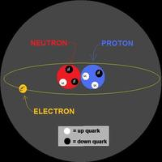

Me despierto sobre un colchón en el suelo porque alguien se resistió a ofrecerme un rinconcito de su cama. Estoy en un piso compartido de Cambridge a 10 minutos caminando de la Universidad de Harvard. Salgo a la cocina y encuentro preparando café al tipo barbudo que anoche me dijo estudiaba estrellas de neutrones. -“Hey…”,-“Hey…” [...]
Entradas relacionadas
¿Qué gira más rápido: el motor de un Fórmula 1 o una Estrella de neutrones?
Por Colaborador Invitado | 10/01/2012 @ 09:30 | Curiosidades, Física | 31 Comentarios
Creando estrellas artificiales
Por maikelnai | 06/09/2010 @ 22:47 | Astronomía, Fotografía | 2 Comentarios
Descubren estrella 300 veces mayor que el sol
Por maikelnai | 21/07/2010 @ 23:51 | Astronomía | 11 Comentarios
 Me despierto sobre un colchón en el suelo porque alguien se resistió a ofrecerme un rinconcito de su cama. Estoy en un piso compartido de Cambridge a 10 minutos caminando de la Universidad de Harvard.
Me despierto sobre un colchón en el suelo porque alguien se resistió a ofrecerme un rinconcito de su cama. Estoy en un piso compartido de Cambridge a 10 minutos caminando de la Universidad de Harvard.
Salgo a la cocina y encuentro preparando café al tipo barbudo que anoche me dijo estudiaba estrellas de neutrones. -“Hey…”,-“Hey…” son nuestros resacosos saludos. Él va en pijama y yo camiseta y calzoncillos. Es enero en Boston.
- “¿No pasaste frío?”, me pregunta.
- “uff…”, respondo.
Me ofrece café, y veo la luz al final del túnel. La expectativa de la cafeína agudiza mis sentidos, e intento hacer un chiste para astrofísicos: “Me acabas de abrir un túnel al final de la luz. Ah no; que esto es un agujero negro! al revés quería decir… je je…” Me mira de reojo, se hace el silencio, y constato que mi supuesta agilidad metal era efectivamente un placebo.
Caminamos hacia la mesa del comedor. Nos sentamos frente a frente. Tomo mi primer sorbo y le pregunto: ¿Cómo dices que se formaba una estrella de neutrones? (en esta reconstrucción de nuestras divagaciones, cualquier imprecisión en las palabras de Manu corresponde a lapsus de mi memoria, excesiva simplificación, o escasez de cafeína)
Materia apretujándose y comprimiéndose hasta límites insospechados
En realidad,el principio tras la formación de una estrella de neutrones no resulta diferente al de un agujero negro. Todo es cuestión de masa, fuerza de gravedad, y una progresiva compactación de la materia. Éste último punto sobre átomos y partículas comprimiéndose es el que más cautivó mi imaginación. Pero empecemos un poco más atrás.
Las estrellas brillan porque la fuerza de la gravedad en su interior es tan descomunal que apretuja los átomos de hidrógeno hasta el punto que fusionan sus núcleos generando átomos de helio. Esto libera gran cantidad de energía hacia el exterior, y empuja hacia fuera los propios átomos de hidrógeno de capas superiores. Así es como en la estrella se mantiene un equilibrio entre gravedad hacia dentro y presión hacia fuera.
Cuando el hidrógeno escasea, la presión del plasma disminuye y la gravedad empieza a ganar la partida. Todo se va compactando hasta el punto que el helio comienza a fusionarse en átomos más pesados. Esto generará más energía y volverá a empujar hacia fuera las capas de la estrella. Y así con más elementos químicos, hasta que poco a poco el combustible nuclear se va apagando y las capas exteriores empiezan a colapsarse hacia el centro.
Cuando esto ocurre hay un punto en que la presión es tan salvaje, quede manera muy localizada empiezan a producirse reacciones tremendamente exotérmicas,y la estrella pega un petardazobrutal formando una supernova. Para que te hagas una idea de las dimensiones de tal explosión, las supenovas que veis en imágenes de la NASA pueden tener varios años luz de diámetro. Nuestro sistema solar entero sería un puntito indistinguible dentro de la supernova.
Tras la supernova, parte del material estelar se esparcirá por el Universo, y parte se colapsará de nuevo hacia el centro.
Si la estrella era muy grande –más de 20 veces nuestro Sol-en el cadáver estelar quedará como mínimo la masa de 3 soles comprimidos en un espacio diminuto. Esto provocará una fuerza de gravedad tan grande que impedirá escapar incluso a la luz. Se habrá formado un agujero negro.
Si la estrella original era menor a 8 veces nuestro Sol, lo que quede será un pedrusco del tamaño de la Tierra y máximo 1.4 soles de masa que los astrofísicos llaman enana blanca.
Pero si inicialmente contenía entre 8 y 20 veces la masa de nuestro Sol, y en el cadáver estelar se concentra el equivalente a entre 1.4 y 3 soles, ocurrirá una cosa espectacular: la presión por la gravedad no será suficiente para constituir un agujero negro, pero sí para apretujar los átomos hasta el punto que protones y electrones se unan formando neutrones. Toma ya! Se estaráconstituyendo una estrella de neutrones, y toda esa materia de 1.4-3 soles quedará condensada en unradio de aproximadamente 10 km. Sonlos cuerpos observables más densos del Universo (por el momento), queel postdoc Manu Linares estudia desde el MIT gracias a los Rayos-X que emiten las reacciones termonucleares en su interior.
Escribí “(por el momento)”, porque de repente Manu me cuenta algo que me deja boquiabierto.
- Pero Manu; ¿tú qué diantre investigas exactamente?
- Entre otras cosas el tamaño exacto de la estrella de neutrones
- ¿Y eso es tan importante?
- ¡Mucho! porque la masa total sí la podemos saber. Y conocer si una determinada cantidad de materia se concentra en 8, 10, o 15 km nos da indicios de qué puede estar ocurriendo en su interior. Piensa que no sabemos bien qué física se aplica en estas superdensidades, y el grado de quarks sueltos que pueden existir.
- Un momento… ¿Quarks sueltos???? (sistema nervioso simpático activado: el cuerpo y mente se preparan para la acción)
- Sí; cuando la gravedad es muy grande, los neutrones pueden llegar a romperse y liberar los tres quarks que los constituyen.
- ¡Fuá! Y lo dices tan pancho… pero hay quarks sueltos por ahí?
- En la naturaleza no, pero dentro de una estrella de neutrones podría ser. No se sabe todavía, pero las leyes de la física en principioparecen permitirlo.
Apunte: Hace unas décadas se pensaba que electrones, protones y neutrones eran partículas elementales; es decir que no estaban formadas por partículas más pequeñas. Posteriormente se descubrió que protones y neutrones estaban en realidad constituidos por unas subpartículas llamadas quarks. En concreto los neutrones tenían en su interior dos quarks “down”, y un quark “up”. El protón lo contrario

- Oye… entonces… ¿podría haber estrellas de quarks?
- Bueno; nunca se ha observado ninguna…
- También se predijeron los agujeros negros de manera teórica mucho antes de ser observados
- Cierto.
- Entonces podrían existir… y si podrían existir, con lo grande que es el Universo, seguro que hay…
- No conocemos bien la física a estas energías, pero efectivamente hay gente diciendo que sí podrían existir. Ya te pasaré papers… y habla con algún físico teórico.
- ¿Qué crees que descubriremos antes: ¿estrellas de quarks o vida extraterrestre?
- El calcetín perdido en la lavadora…
- No me fastidies tío… Ya sé que no hay respuesta. Pero elucubra a partir de lo que sabes… tiene sentido
- Comodín del público… estrellas de quarks!
Cuando te enamoras de alguien (no me refiero a Manu…), no logras quitártelo de la cabeza. Sigues tu vida cotidiana como si nada, pero en realidad está constantemente presente, esperando el momento adecuado para el reencuentro. A mi me pasa con la ciencia y con quien me regala libretas. Y me sucedió con las estrellas de quarks.Tuve que escribir a Miguel.
¿Existe algo entre una estrella de neutrones y un agujero negro?
Apuesta que sí. Aunque sea por la ilusión que genera el desconocimiento. Cuando creía que yo tenía una idea superficial pero sólida de física subatómica, resulta que los protones y electrones se juntan formando neutrones, y que si los apretujas suficientes se rompen liberando sus quarks. ¿Qué más puede pasar? ¿Qué ocurre si todavía comprimes más esos quarks? ¿Qué estructura tiene la materia dentro de un agujero negro?
“Es una singularidad”, me dice el físico teórico Miguel Alcubierre desde la UNAM de México. Ya habíamos hablado de ello hace pocos meses durante una cena en DF amenizada por agujeros negros, de los que él es un experto. Retomamos el tema.
- Come on Miguel… ni una hipótesis? Aunque no sea falseable?
- A nadie le gusta la singularidad, pero hasta que tengamos una teoría cuántica de la gravitación consistente, es el resultado que la relatividad predice para los agujeros negros. Allí la materia no está en ningún estado. Se colapsa inevitablemente a un punto de densidad infinita. Es un teorema matemático formalmente demostrado, no un invento. No se le puede dar la vuelta.
- Grrrrrr…. ¿Y las estrellas de quarks?
- Sí son una posibilidad teórica. Pero no sabemos bien bajo qué condiciones se forman ni cuales son sus propiedades. Las ecuaciones de cromodinámica cuántica son horribles y no sabemos si se pueden aplicaren estas energías y presiones.
- He leído que las estrellas de quarks estarían formadas de materia extraña
- Hay 6 tipos de quarks: up, down, top, bottom (por falta de imaginación de los físicos), charm y strange. Bajo esas condiciones los strange podrían ser más estables.
- Pero entonces existen…
- Son posibles en principio. Pero entre un agujero negro y una estrella de neutrones no hay mucho margen para tener estrellas de quarks estables. Podría ocurrir que al formarse el plasma de quarks se iniciara un colapso hacia agujero negro.
- Pero Miguel… aunque la posibilidad sea muy remota, y las condiciones para su formación muy restringidas… con lo grande que es el Universo, si no son imposibles seguro que en algún rincón existen.
- Sí. Pero falta justo eso. Saber si están permitidas.
- Por lo que he leído, nadie dice que no lo estén…¿Crees que descubriremos primero vida extraterrestre o estrellas de quarks?
- Si existen, estrellas de quarks. Vida extraterrestre hay seguro pero me parece que estamos muy lejos de encontrarla. Y la astrofísica avanza muy rápido. Pero deberías hablar con un experto en partículas
Intuyo que el experto en partículas me dirigirá a un físico cuántico, y capaz que éste me envíe a un matemático de teoría de cuerdas. Einstein me libre… seguro que me advierte que lo suyo son todo especulaciones sin observación experimental, y me recomienda que hable con algún astrofísico de los que estudia el Universo mirando al cielo en lugar de a ecuaciones. Como Manu.
Paro aquí, porque por mucho que continuáramos nunca habría un final. Eso es lo bonito de la ciencia. El conocimiento va creciendo. Tanto el colectivo como el individual de cada uno. Ya retomaremos la aventura. Yo de momento me quedo ilusionado con que en algún rinconcito del Universo existe un astro del que todavía nunca había oído hablar. ¿lo descubriremos antes que la vida extraterrestre? Quien sabe… ¿opiniones?
Tras terminar toda la cafetera y contrastar otros fenómenos etnográficos no explicables por la ciencia, Manu y yo nos levantamos de la mesa.
- Por cierto Manu; a mi esto que decís de la singularidad me parece tener una jeta terrible… no tenéis ni puñetera idea y punto. Pero allí en el centro del agujero negro hay algo con alguna “forma” seguro
- Oye, que el mundo cuántico es aberrante. Y nuestra visión del mundo limitadísima. “Debemos aprender a vivir con los límites de nuestra percepción, e incluso de la imaginación”.
Gran frase y llena de sentido. Pero reniego de ella.
Entradas relacionadas
-
¿Qué gira más rápido: el motor de un Fórmula 1 o una Estrella de neutrones?
Por Colaborador Invitado | 10/01/2012 @ 09:30 | Curiosidades, Física | 31 Comentarios
-
Creando estrellas artificiales
Por maikelnai | 06/09/2010 @ 22:47 | Astronomía, Fotografía | 2 Comentarios
-
Descubren estrella 300 veces mayor que el sol
Por maikelnai | 21/07/2010 @ 23:51 | Astronomía | 11 Comentarios